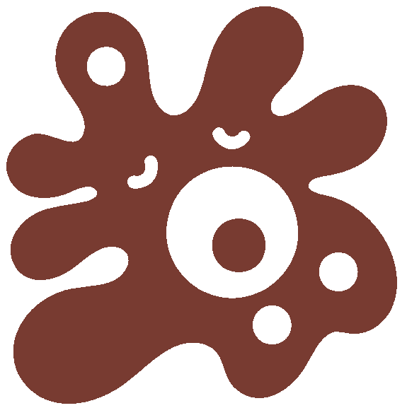
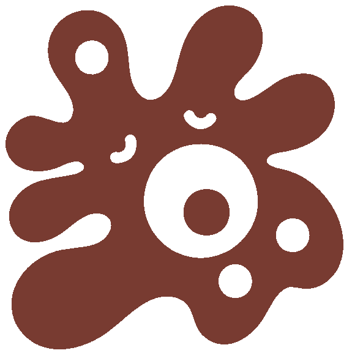

Hello, I’m Bedirhan Avdancı!
Hello, I’m Bedirhan Avdancı!
I am a biologist dedicated to decoding the complexity of belowground life through the lens of quantitative and computational ecology. My work explores the structural dynamics of soil communities—including viruses, bacteria, fungi, algae, and soil animals—and seeks to understand how these microscopic interactions scale to drive global ecosystem functioning. This approach is defined by a blend of empirical rigor and a lifelong connection to the natural world; having spent my early years as a shepherd, I carry a foundational sensitivity to ecological processes that informs my use of theoretical and evolutionary frameworks.
I completed my undergraduate studies in Biology at Hacettepe University, where I graduated with the highest cumulative GPA ever recorded in the Faculty of Science, and currently am in a gap year and actively seeking a graduate position.
I also value scientific writing as an essential practice for clarifying ideas and revealing patterns that often remain invisible until they are put into words. Outside of my professional life, I am interested in poetry and literature. Engaging with language and different cultures is a personal hobby that allows me to explore harmony and meaning in different forms.
This website serves as a personal academic space where I share my research interests, writing, and ongoing reflections. For a more detailed overview of my academic background, please see my CV, and if you have any questions or would like to discuss potential collaboration opportunities, you are more than welcome to reach out to me via email.


 

-Don’t hurt the Dirt!-